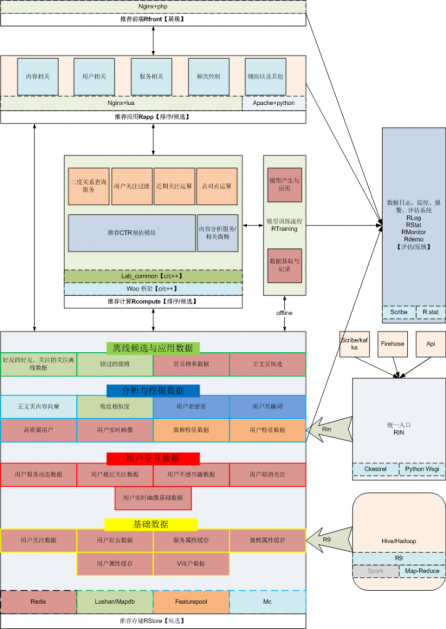
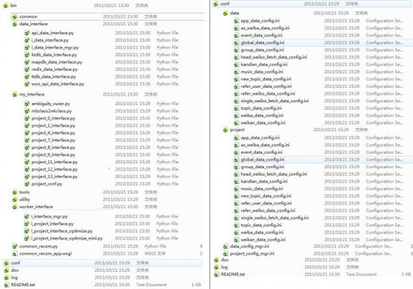
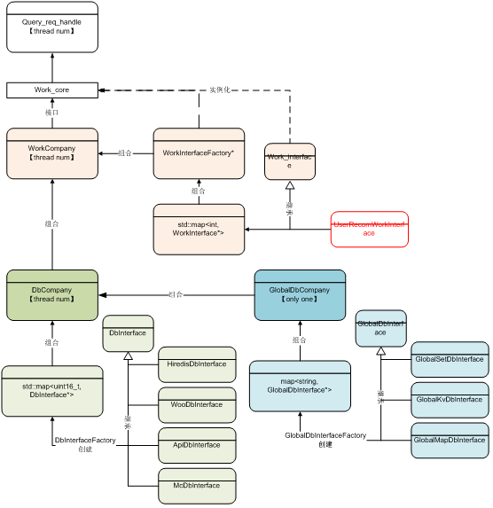
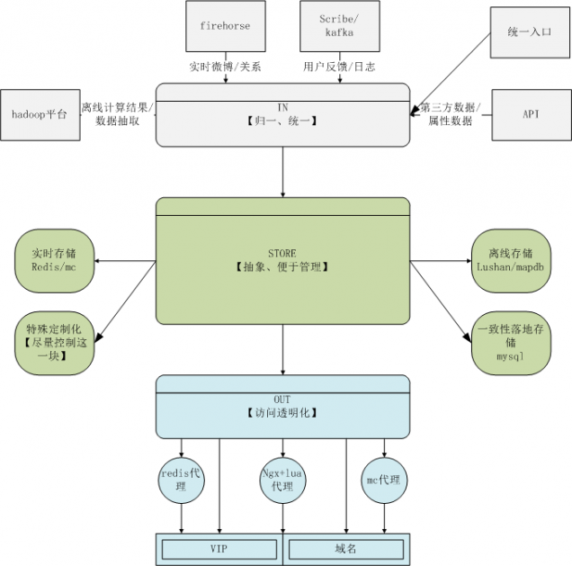
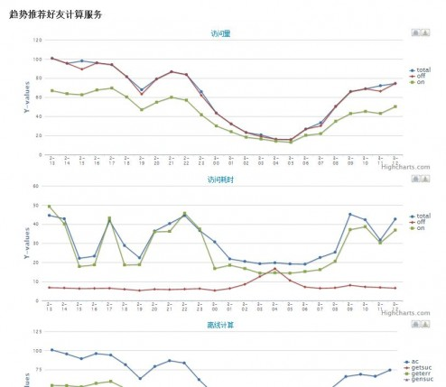
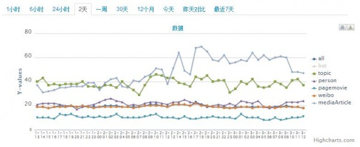

|
任何不拿出干货的技术文档都是耍流氓，首先上体系结构图，如图所示，在整体体系结构上，微博推荐可以被划分为4层：前端展现层、应用层、计算层以及数据层，其中我们把数据日志、统计、监控以及评估也都分在数据层。接下来我会逐一介绍他们的目的，作用、技术与发展。更为细致的描述应该会在以后的博客中体现。

1、推荐前端RFront
RFront主要目的是展现以及渲染微博内容，由于当前微博推荐在web以及客户端都有相对应的产品，展现差异较大，但数据和方法却是通用的。那么，需要有这么易于维护、拥抱变化的一层高效地响应产品需求。当然在微博推荐实际业务中，由于产品形态的多样以及策略的负责性，RFront做了不少工作以及相关的应用技术很多，在接下来的文章中会有相关的同学着重介绍这一块工作。
2、推荐应用RApp
RApp主要目的是为前端提供候选以及起到部分排序功能。该层利用通用框架【nginx + lua 以及apache + python两个版本】提供应用接口服务。这些应用包括：内容、用户、服务、feed推荐频次以及辅助功能。
在这里有一个工具叫做通用推荐框架（CRF, common recommon framework），它主要的作用是：融合推荐资源、规范推荐应用接口以及统一工作流。早期版本使用的是apache+mod_python的形式，后来在RApp的定位上，认为它是一个数据通路，同时需要获取各种协议的数据内容，因而将其扩展到nginx + lua的版本。
CRF是一个二次开发框架，无论是早期的apache+mod_python版本还是nginx+lua版本，其核心思想是相似的，它们的目标都是为了较为快速进行推荐策略开发，快速的使用既有推荐存储数据。主要的体现在：
- 通过透明化不同协议的存储数据获取方法，方面获取推荐资源。比如，获取mc、redis以及openapi的数据方式是一致的，get以及mget是一个标准的获取方法。
- 通过建立project的概念，以继承的方式让二次开发者建立自己的项目，同时将project中work_core暴露出来，完成主体业务。当然其中也有一个小的技巧，比如global_data以及并行化获取数据等等。
- 通过暴露出来的common_recom的核心接口来定义推荐的统一接口，我们整理和抽象了所有推荐的接口数据形式，在一定程度上进行了规范和定义，这样方面了进行接口管理以及对应。比如obj【多用来表示访问者】，tobj【多用来表示访问对象】，from【来源】，appkey【分配key】，num【数量】，type【类型，用来区分同一个项目中不同接口】，pid【区分项目】等等。
以下图是其三层目录结构【apache+mod_python】：

其中我们通过data_interface来实现数据透明化，通过work_interface来管理项目，my_interface二次开发者开发属于自己的project。同时需要配置文件【data以及project】进行数据和项目的对应。这样会带来一个好处，通过这个框架将所有的资源整合起来了，在推荐早期项目中起到了比较明显的作用：快速响应算法和产品策略、项目迭代比较迅速同时让业务人员在一定程度上关注业务，后来也推动了后来推荐存储架构的诞生。通过不断的优化，这个逐渐被lua以及c/c++版本的通用框架取代。
3、推荐计算层RCompute
推荐计算层的职责是做高效运算，比如二度关系运算、用户之间桥梁关系运算、CTR预估等等CPU密集型的功能模块。同时在RApp以及RFront有一些离线数据采用远程访问以前比较低效的，因此我们需要一个更加高效的通用框架来满足上述要求，lab_common_so孕育而生。
Lab_common_so是基于woo框架的【感谢曾经的同事支持，这是一个轻型的通讯框架，通讯协议以及日志系统比较完善】一个业务流框架，同时兼有了CRF的特点――整合融入数据资源、规范业务流程、统一接口形态，还具有了数据本地化功能。其实在在线demo c/c++开发框架中有很多，在这里主要介绍一些自身特点：
- 通过c++的一些特性，让二次开发者在工作流上尽可能减少关注其他架构以及通讯包括存储客户端的事情，下图是主要的类结构图【UML的一套傻傻的不会，大家凑合看吧。】

- 通过global_data以及data的类实现获取数据的透明化
- 在后期的改造中，将work独立出来，有开发方自己进行编写具体实现和具体类，进行so化支持线上更新
在计算层中有一个模块是RTaining，主要用来进行模型更新以及线上学习的，前期主要用在点击反馈或者实时模型上。
4、数据RStore
推荐数据对于推荐而言是基础，决定了性能也决定了效果。因此在数据存储上花的精力较多。微博推荐存储的数据拥有以下特点：
- 种类繁杂，比如需要存储挖掘的静态数据，还有用户实时行为的动态数据，有为提升性能而存储的属性缓存也有离线运算的直接结果数据
- 存储选型上也不能一概而论，动态数据以及静态数据的要求是不一样，统一都用高效的内存存储浪费资源，不宜扩展，都用离线的静态存储又达不到性能要求
- 多个外部门的数据，沟通和写作方式各式各样
- 某些数据量较大，同时在某些数据的实时性要求上较高。
针对上述特点，推荐抽象解决IN/OUT/STORE三部分。下图详细的描述了推荐数据的结构图：

IN：输入的关键是解决统一和，因此通过建立基于ckestral的统一入口来解决数据规范的事情，同时在日志以及实时数据上也有相应的解决方案，统一入口为RIN。
OUT：输出的关键是需要透明化，对于业务方而言不需要关系如何进行的服务器分配以及存储类型，而能够方面快速稳定地获取到数据就好。
STORE：这一块主要解决数据类型繁杂的工作，推荐的经验是离线使用lushan以及mapdb，在线使用redis/mc，如果有特殊需求，比如批量高效压缩存储特征数据，也会使用一些自己定制的数据存储形式。
在这里面，需要特别强调的是离线静态数据存储，在性能以及成本上找到一定的平衡点是推荐比较有特色的地方，lushan以及mapdb会在之后做专题介绍。同时在推荐发展的过程中,hadoop的引入在一定程度上解决了很多候选以及排序的问题，因此一些map-reduce的结果数据如何放置于线上，推荐系统的r9项目很好的解决了这个问题。
5、数据值辅助工具：日志、监控、评估以及报警
推荐日志系统主要为了解决离线数据分析以及在线监控使用。当前推荐系统针对离线的分析来自于两块，一个是来源于自己的日志系统，另外一个是来自于公司的hadoop集群【几乎涵盖了非业务方的全局数据】，也在考虑将这两部分进行整合归并。
推荐监控系统是去年建设起来的，主要分为三部分：
性能监控，主要查看应用、计算以及存储的性能服务指标，同时与报警体系联动，及早发现问题、解决问题。目标是实时以及准实时，现在是分钟级别的。
效果监控，主要跟踪效果的优化和改进，当前重点业务线的效果均在监控系统中
对比测试监控，主要针对线上的A/B测试，进行分维度数据展示和对比
以下是我们监控的一些信息：
曝光以及性能监控：

效果监控：

推荐评估系统，当前主要以demo实验、下线评估以及线上评估三个体系构成，其中线上评估体系主要跟着监控体系来的。而下线以及demo主要是一套前端的展示框架，几乎涵盖了推荐所有的接口以及对比测试数据。
推荐报警体系，微博本身是有的，不过由于性能指标以及效果指标存在一定上的定制化需求，这一块正在花精力解决。
好了，这一篇就到这里，推荐体系结构的介绍基本上告一段落了，其中涉及到的比较细节的工作将会在专题中进行介绍。也请大家多多捧场。
还是老规矩：
Simple is Beautiful! 设计复杂的系统不是难事，难的是用简单的东西满足复杂业务，大家共勉！
|